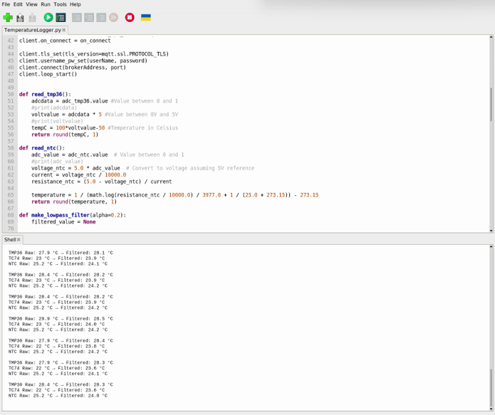
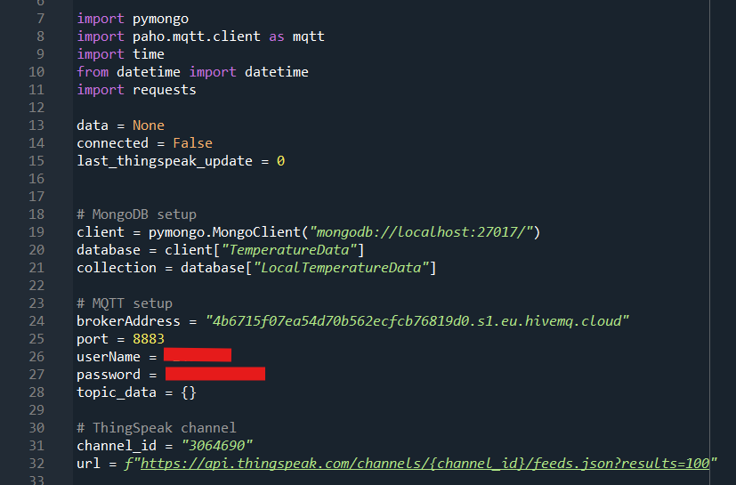
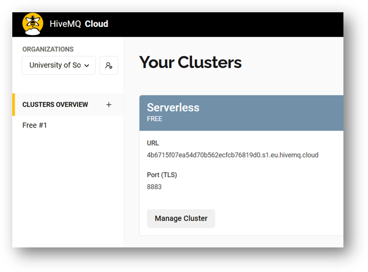
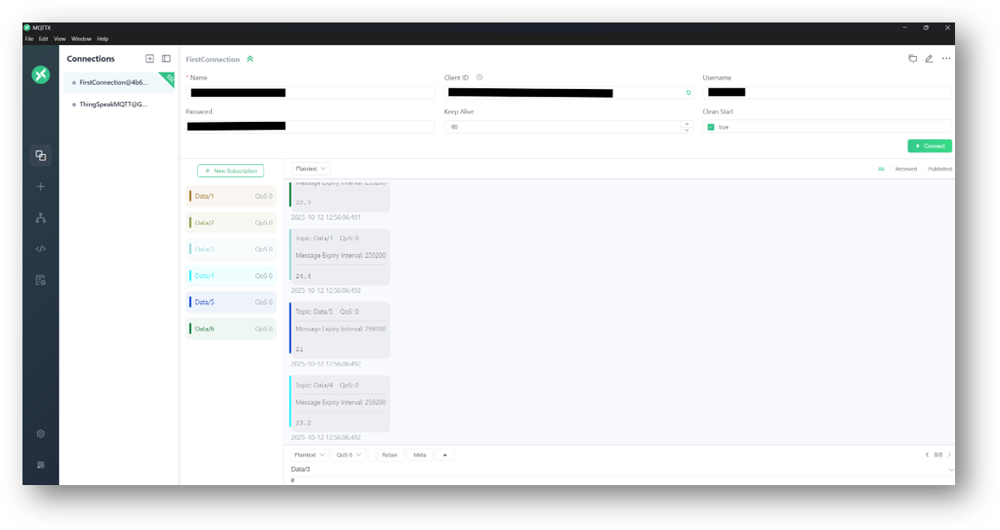
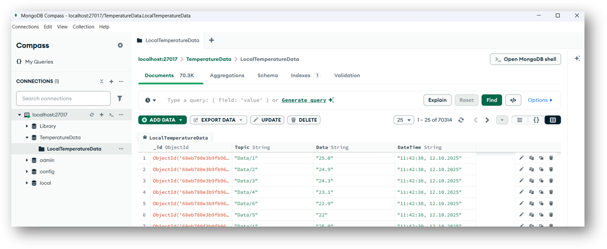
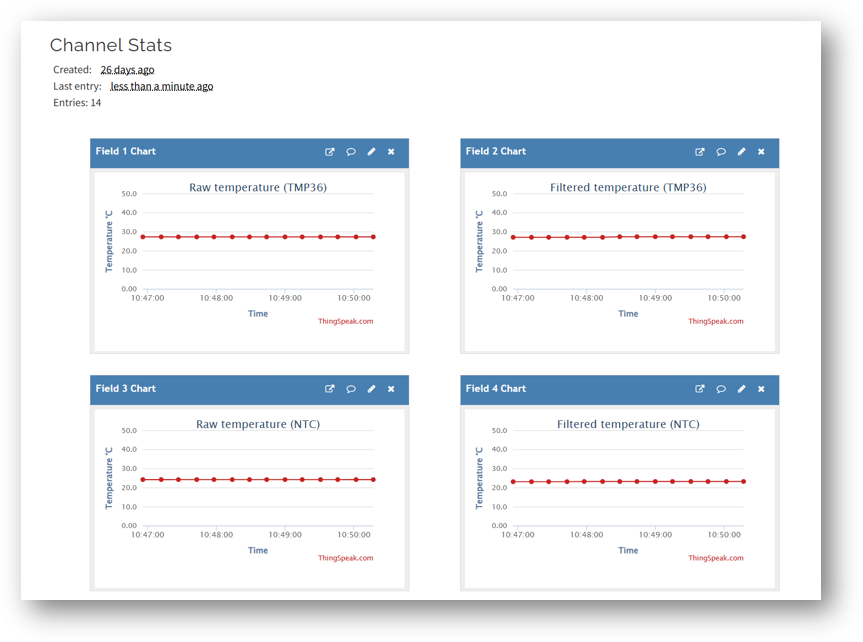
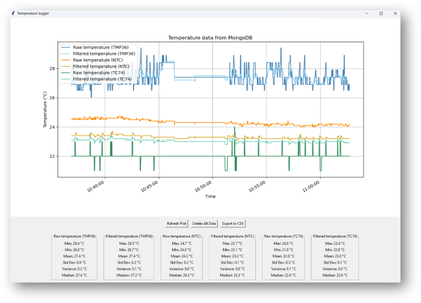

The main methods used to complete this is system is the use of the Python programming language to code the controller and the local server. The Raspberry Pi 5 contains a Python program that autostarts when the Pi boots up. This program is running on the native Thonny IDE for Python programming. The program reads temperature data from multiple different temperature sensors connected to the Raspberry Pi via GPIO pins using different communication protocols such as I2C and SPI.

Three different sensors are wired to the system breadboard. A TMP36 analog temperature sensor, an NTC thermistor and a TC74 digital temperature sensor. The Raspberry pi can only read digital signals, and since TMP36 and NTC will deliver a anlog voltage signal, a conversion must be executed. The TMP36 sensor and NTC thermistor requires an analog to digital converter (ADC) to read the temperature data, shown in both the wiring diagram and the fourth picture. The ADC MCP3002 and I2C-4 wire protcol is used here, and wired directly on the Raspberry pin I2C compatable pins.
The TC74 is already a digital sensor, and uses the SPI-2 wire protocol to communicate with the Raspberry Pi. This sensor is wired directly to the SPI compatable pins on the Raspberry Pi without any additional hardware. The wiring diagram also show the button used for setpoint setting and the LED indicators for system status.
As mentioned, Pythin is used multiple places in the system. The main controller program running on the Raspberry Pi is written in Python, and uses multiple different libraries to read data from the sensors and control the heating element. After reading, the data is converted from raw value to readable temperature, and run though a PI-regulator algorithm to calculate the necessary output to the heating element to maintain the desired temperature. In addition, the program connects to the MQTT broker, and if successfully connected, start to send the data to the broker.
On the local server side, another Python program is running to subscribe to the MQTT broker and receive the data sent from the Raspberry Pi controller. This program process the data and store it in both a local database, MongoDB and a cloud database, ThingSpeak.
For data transfer between the Raspberry Pi controller and the local server, the MQTT protocol is used. It is a lightweight messaging protocol that is ideal for IoT applications due to its low bandwidth requirements and efficient data transfer capabilities. The MQTT protocol uses a publish-subscribe model, where the Raspberry Pi acts as a publisher, sending temperature data to a central broker, and the local server acts as a subscriber, receiving the data from the broker. This method ensures reliable and secure data transfer between the devices, allowing for real-time monitoring and control of the temperature logger system. This system uses the HIVE MQTT broker installed on the local server to handle the data transfer. It only uses a free tier account, but is sufficient for this small system. Credentials such as username and password are used to ensure secure access to the broker.
Picture show the MQTT cluster active for this system.
The MQTT client MQTTX is also installed to monitor the data being sent and received by the broker, for debugging and verification purposes.
Two different kind of databases are used in this system, a local database and a cloud database. The local database is a MongoDB database installed on the server, and the python program directly feed the data into the respective table. The database is protected with a username and password to ensure secure access. With MongoDB Compass installed, the database can be easily monitored and managed.
The cloud database used is ThingSpeak, a popular IoT cloud service for storing and visualizing data. The python program uses the ThingSpeak API to send data to the cloud database, where it can be accessed remotely via a web interface. This allows for remote monitoring and analysis of the temperature data collected by the system. Since the system onlys uses a free tier account, there are limitations on the amount of data that can be stored and the frequency of data updates. Data is sent to the cloud database every 15 seconds to stay within these limitations and so the resolution of the data is not going to be as godd as in the local database. The datatransfer to the cloud database is also using the MQTT protocol. Thingspeak services allow for MQTT data transfer directly. 
Finally there is the Datalogger GUI that is used to visualize the data stored in the cloud or local database. The GUI is written in Python using the Tkinter library for the graphical interface. It allows the user to select between viewing data from the local MongoDB database or the ThingSpeak cloud database, togheter with some calculations and statistics based on the data. The GUI also provides options for exporting the data to a CSV file for further analysis. And simple buttons to both refresh the plot to poll for new data, and a button to delete the saved data. 